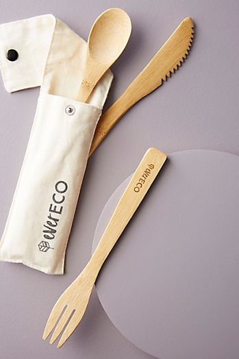
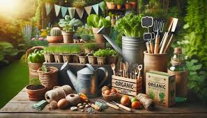
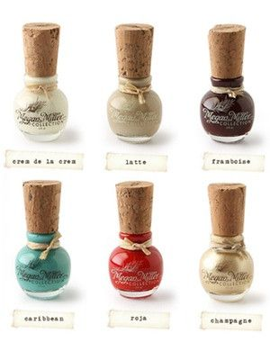
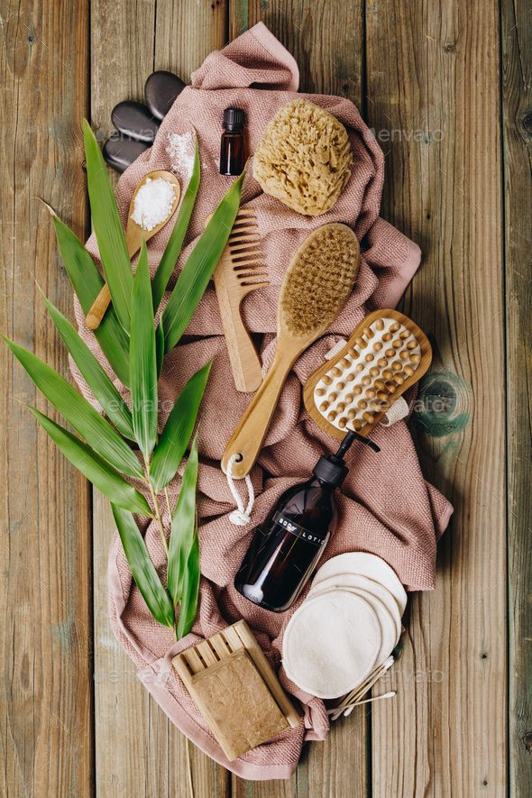
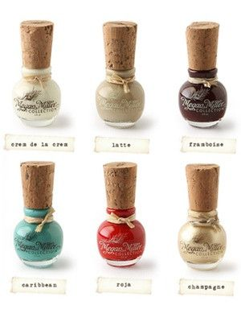
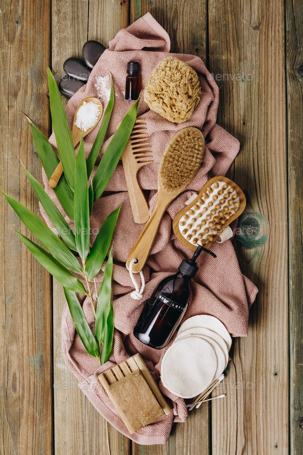

Green Living Tips(sustainable living practices)
Green Cleaning: Quotes to Inspire Sustainable Practices
Cleaning our homes is essential for maintaining a healthy and comfortable environment, but traditional cleaning products often contain harmful chemicals that can harm both our health and the environment. Embracing green cleaning practices allows us to keep our homes clean while minimizing our impact on the planet. Here are some inspirational quotes to inspire sustainable cleaning habits:
"Nature provides us with all the resources to maintain a clean and healthy home." - Unknown
This quote reminds us that many natural ingredients can effectively clean and disinfect our homes without the need for harsh chemicals. From vinegar and baking soda to lemon and essential oils, nature offers a plethora of eco-friendly cleaning solutions that are safe for both us and the environment.
"A clean home is not just about appearances; it's about creating a healthy and nurturing environment for ourselves and our families." - Unknown
This quote highlights the importance of prioritizing health and well-being in our cleaning routines. Green cleaning practices focus on removing dirt and germs without introducing toxins or pollutants into our living spaces, allowing us to breathe easier and enjoy a higher quality of life.
"Every small change in our cleaning habits contributes to a healthier planet for future generations." - Unknown
This quote emphasizes the cumulative impact of our individual actions. By choosing environmentally friendly cleaning products and methods, we reduce our carbon footprint, minimize waste, and help preserve natural resources for our children and grandchildren to enjoy.
"Cleaning with conscience means making choices that are good for both your home and the planet." - Unknown
This quote encourages us to approach cleaning with mindfulness and intentionality. Green cleaning is not just about achieving a sparkling clean home; it's about making conscious choices that support our values of sustainability and environmental stewardship.
"The best way to clean the environment is not to dirty it in the first place." - Unknown
This quote reminds us that prevention is often the most effective form of cleaning. By adopting habits such as reducing waste, recycling, and conserving energy and water, we can minimize the need for intensive cleaning efforts and create a greener, more sustainable world for future generations.
In conclusion, green cleaning is not just a trend; it's a fundamental shift towards healthier, more sustainable living. Let these quotes inspire you to adopt eco-friendly cleaning practices that protect both your home and the planet. Together, through mindful choices and conscious actions, we can create a cleaner, healthier world for generations to come.
Inspiring Green Living Quotes About Pets
In our journey towards a more sustainable lifestyle, our furry companions play a crucial role. Pets bring immense joy and companionship into our lives, but they also have an environmental impact. Embracing green living practices extends to every aspect of our lives, including how we care for and interact with our beloved pets. Here are some inspiring quotes that encapsulate the essence of green living in relation to our animal friends:
"Until one has loved an animal, a part of one's soul remains unawakened." - Anatole France
This timeless quote beautifully highlights the deep connection we share with our pets. It reminds us that caring for animals is not just a responsibility but also a profound experience that enriches our lives. Embracing green living means extending this love and care to the environment that sustains both humans and animals alike.
"The greatness of a nation and its moral progress can be judged by the way its animals are treated." - Mahatma Gandhi
Gandhi's words emphasize the importance of compassion and empathy towards all living beings, including animals. Green living involves making choices that prioritize the well-being of not only ourselves but also the planet and its inhabitants. By treating our pets with kindness and respect, we contribute to a more sustainable and ethical society.
"Saving one animal won't change the world, but it will change the world for that one animal." - Unknown
This quote serves as a powerful reminder that every small act of kindness towards animals makes a difference. Whether it's adopting a rescue pet, choosing eco-friendly pet products, or reducing our pet's carbon footprint, each action contributes to a greener and more compassionate world.
"The earth is what we all have in common." - Wendell Berry
Wendell Berry's words underscore the interconnectedness of all life on Earth. Our pets, like us, depend on the health and vitality of the planet for their well-being. Practicing green living means recognizing and honoring this shared responsibility to protect and preserve the environment for future generations, both human and animal alike.
"In every living thing there is the desire for love." - D.H. Lawrence
This quote speaks to the universal need for love and companionship that transcends species boundaries. Our pets offer us unconditional love and loyalty, reminding us of the importance of nurturing and protecting all forms of life. By incorporating green living practices into our pet care routines, we honor this bond and contribute to a more sustainable and harmonious world.
In conclusion, green living and pet ownership are not mutually exclusive; rather, they complement and enrich each other. By adopting eco-friendly practices and fostering a deep connection with our animal companions, we can create a greener, more compassionate world for all beings to thrive in. As we strive to live in harmony with nature, let us remember the invaluable role that our pets play in this shared journey towards a sustainable future.
Inspirational Green Living Quotes About Transportation
Transportation is a vital part of our daily lives, but it also has a significant impact on the environment. As we strive to reduce our carbon footprint and embrace sustainable living practices, it's essential to reconsider how we move from place to place. Here are some inspiring quotes that highlight the importance of green transportation:
"The greatest threat to our planet is the belief that someone else will save it." - Robert Swan
This quote reminds us that we all have a role to play in protecting the environment. When it comes to transportation, small changes in our daily habits, such as walking, biking, or using public transportation, can make a big difference in reducing emissions and preserving the planet for future generations.
"The Earth does not belong to us: we belong to the Earth." - Marlee Matlin
Marlee Matlin's words emphasize the interconnectedness of all living beings with the planet. By choosing sustainable transportation options like electric vehicles or carpooling, we honor our responsibility to protect and preserve the Earth's natural resources for ourselves and future generations.
"Every time you spend money, you're casting a vote for the kind of world you want." - Anna Lappé
Anna Lappé's quote reminds us that our purchasing decisions have a powerful impact on the world around us. When it comes to transportation, investing in eco-friendly alternatives sends a message to manufacturers and policymakers that sustainability matters. By supporting green transportation options, we help drive positive change towards a cleaner, healthier planet.
"You must be the change you wish to see in the world." - Mahatma Gandhi
Gandhi's timeless words urge us to take action and lead by example. When it comes to transportation choices, each one of us has the power to make a difference. Whether it's opting for renewable fuels, reducing our reliance on single-occupancy vehicles, or advocating for better public transportation infrastructure, we can all contribute to a more sustainable future.
"We do not inherit the Earth from our ancestors; we borrow it from our children." - Native American Proverb
This Native American proverb encapsulates the essence of intergenerational stewardship. When we prioritize green transportation options, we protect the planet not only for ourselves but also for future generations. By making conscious choices today, we ensure that our children and grandchildren inherit a world that is vibrant, thriving, and full of possibilities.
In conclusion, transportation plays a crucial role in shaping our environmental footprint. By embracing green transportation practices, we can reduce emissions, conserve natural resources, and create a healthier planet for all living beings. Let these inspirational quotes serve as a reminder of the power we hold to make a positive impact through our daily transportation choices.
Family and Green Living: Quotes for Sustainable Harmony
Family is the cornerstone of our lives, and it's within the bonds of family that we cultivate values and habits that shape our world. As we strive to live more sustainably, it's crucial to involve our families in the journey towards a greener future. Here are some inspirational quotes that celebrate the intersection of family and green living:
"The love of a family is life's greatest blessing." - Unknown
This quote reminds us of the profound love and support that families provide. When we embark on the path of green living together as a family, we strengthen our bonds and create lasting memories built on shared values of sustainability and stewardship.
"Alone we can do so little; together we can do so much." - Helen Keller
Helen Keller's words highlight the power of collaboration and unity within families. By working together towards sustainable practices such as recycling, conserving energy, and reducing waste, families can amplify their impact and make meaningful contributions to protecting the environment.
"Family is not an important thing, it's everything." - Michael J. Fox
Michael J. Fox's quote encapsulates the significance of family in our lives. When we prioritize green living as a family, we not only safeguard the planet for future generations but also instill values of responsibility, empathy, and resilience in our children, ensuring a legacy of sustainability that transcends generations.
"The family is one of nature's masterpieces." - George Santayana
George Santayana's words celebrate the beauty and complexity of family relationships. Just as each member of a family brings unique strengths and perspectives, each individual contribution to green living, no matter how small, contributes to the larger masterpiece of sustainable harmony within our homes and communities.
"In family life, love is the oil that eases friction, the cement that binds closer together, and the music that brings harmony." - Friedrich Nietzsche
Friedrich Nietzsche's metaphor beautifully captures the essence of love within families. When we approach green living with love and compassion, it becomes not just a set of practices but a way of life that fosters connection, understanding, and shared purpose, creating a harmonious environment where sustainability thrives.
In conclusion, family and green living are intertwined in a delicate dance of love, responsibility, and shared values. Let these inspirational quotes serve as a reminder of the power and potential that families hold to make a positive impact on the world through sustainable living. Together, as families united in purpose, we can create a brighter, greener future for generations to come.
Enjoy visual ideas:
Eco-Friendly Products(eco-friendly lifestyle choices)
Kitchen
Garden
Personal care
 



reducing environmental impact
What is environmental impact?
Environmental impact refers to the effect that human activities have on the natural world. It encompasses the changes, both positive and negative, that our actions cause in ecosystems, biodiversity, air and water quality, and the overall health of the planet. These impacts can be direct, such as pollution from factories or deforestation, or indirect, like the carbon emissions contributing to climate change. Understanding environmental impact is crucial for making informed decisions about how we interact with our surroundings and for fostering sustainable practices that minimize harm to the environment.
What can I do?
To minimize environmental impact, individuals can adopt various sustainable practices in their daily lives. Simple actions, such as reducing energy consumption, conserving water, and minimizing waste generation, can collectively make a significant difference. Choosing eco-friendly transportation options, such as walking, cycling, or using public transit, helps reduce carbon emissions. Additionally, supporting environmentally responsible products and businesses encourages sustainable production and consumption patterns. By making conscious choices in our consumption habits, we can contribute to preserving the natural world for future generations.